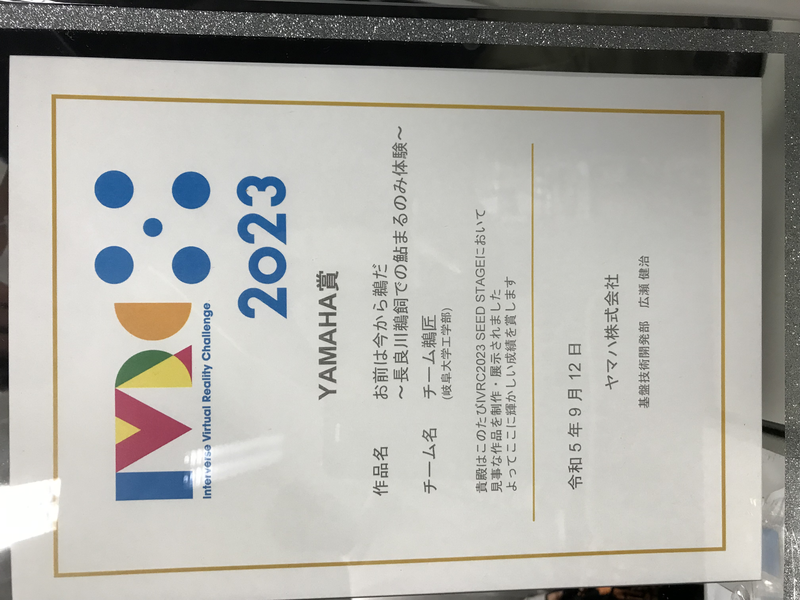
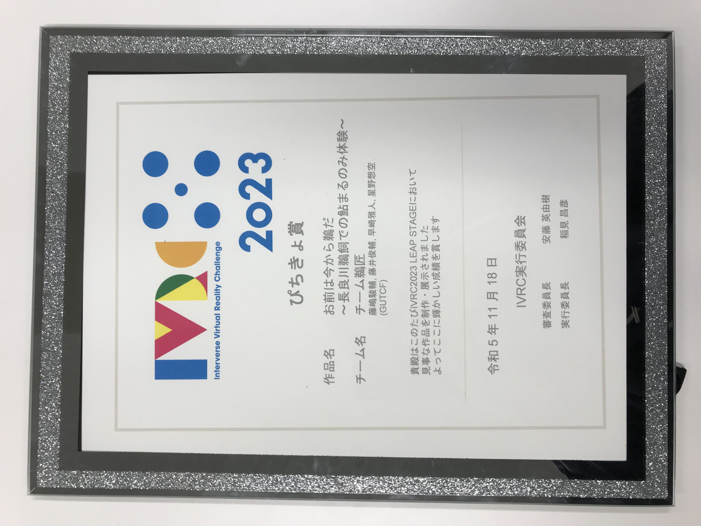
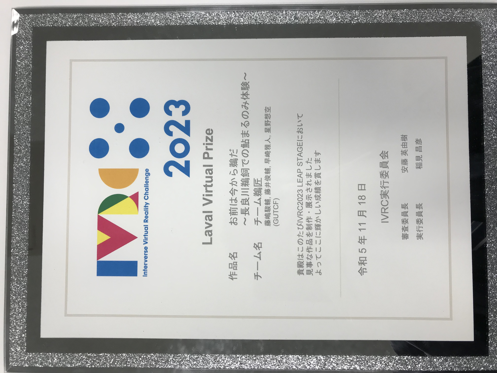
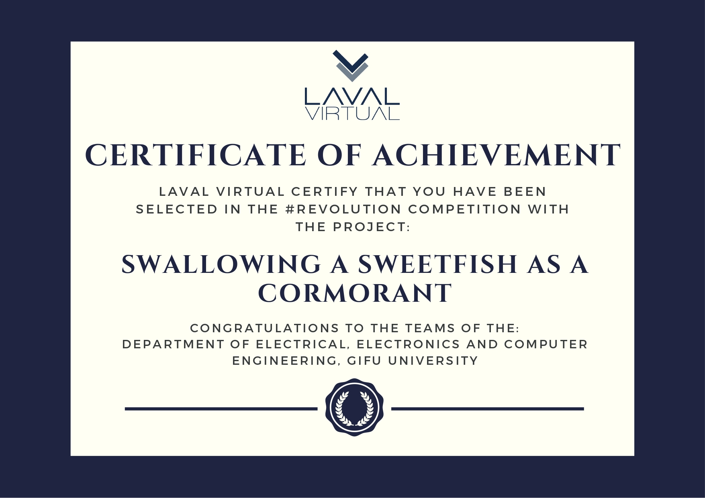

チーム鵜匠 メンバー
| 藤嶋 駿輔 | 我らチーム鵜匠のリーダーです。主に全体統括とソフトウェアの開発を担当しました。 所属研究室: 木島研究室 |
|---|---|
| 早崎 雅人 | サブリーダーかつこのサイトの作成者です。主にハードウェアの開発を担当しました。 所属研究室: 加藤研究室 |
| 星野 想空 | 主に広報やソフトウェアの開発補佐を担当しました。 所属研究室: 草刈研究室 |
| 藤井 俊輔 | 主にハードウェアの開発補佐を担当しました。 所属研究室: 寺田研究室 |
プロトタイプ開発メンバー (メンバーには上記4人も含まれるがこの項目では省略)
| 林 留為 | 主にハードウェアの開発補佐を担当しました。 所属研究室: 松本研究室 |
|---|---|
| 高橋 芳樹 | 主にソフトウェアの開発補佐を担当しました。 所属研究室: 田中研究室 |
開発メンバーの所属 (共通, 2024年4月1日(月) 時点での所属)
岐阜大学 大学院 自然科学技術研究科 知能理工学専攻 知能情報学領域 修士1年
謝辞
上記メンバーが一丸となって開発に取り組んだことによりこの作品は完成し, IVRCで評価されるまでに至りました。
開発メンバー全員に厚く御礼申し上げます。
また, この作品の開発のきっかけとなった授業の指導教員であり, 多大な助言を受け賜りました木島竜吾准教授,
鵜飼について様々なことを教えて頂いた山下哲司鵜匠や長良川うかいミュージアムの関係者の皆様に厚く御礼申し上げます。
そして, IVRCにおいて現地会場で体験していただいた方をはじめとしたこの作品を見守ってくださった多くの方々に厚く御礼申し上げます。



